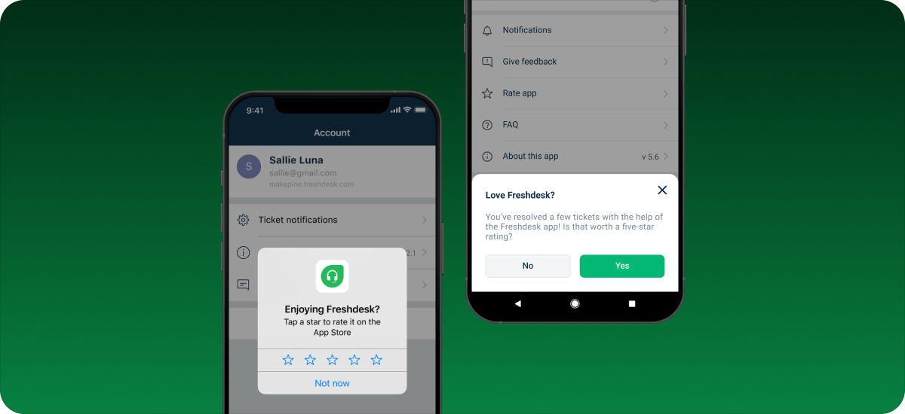
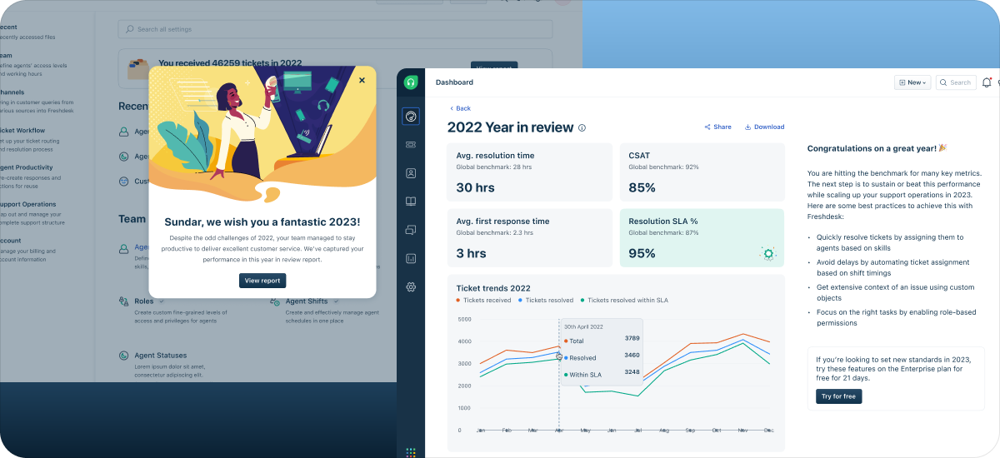

Keka Rewards & Recognition
0-1 multi-persona recognition system covering Nominator, Panelist, and HR Admin flows for peer-to-peer recognition at enterprise scale across a 7,500+ company HRMS platform.

Redesigned Freshdesk's mobile feedback and review experience to improve App Store ratings, create a transparent review flow, and establish a scalable feedback system that enabled the product team to learn directly from users.

Every year, Freshdesk celebrated customers by creating personalized Year in Review videos highlighting their team's achievements. As the customer base grew, manually producing these videos became unsustainable. I redesigned the experience as an automated, in-product Year in Review that helped customers celebrate achievements, compare performance via benchmarks, and discover upgrade opportunities.
0-1 multi-persona recognition system covering Nominator, Panelist, and HR Admin flows for peer-to-peer recognition at enterprise scale across a 7,500+ company HRMS platform.

Built a complete design system in Figma from scratch – foundations, typography, grids, and advanced components – while leveraging Cursor AI to ship production-ready UI and eliminate handoffs.

Architected the mobile-native framework for the Freshchat AI Bot Builder, enabling 300+ clients to scale automated conversational workflows from web to mobile.